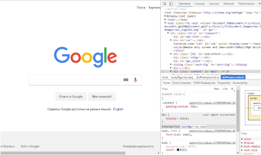

Вступление

Frontend — это разработка пользовательского интерфейса и функций, которые работают на клиентской стороне веб-сайта или приложения. Это всё, что видит пользователь, открывая веб-страницу, и с чем он взаимодействует.
Frontend-разработчик сотрудничает с дизайнерами, программистами и UX-аналитиками, чтобы создавать удобный и востребованный продукт.